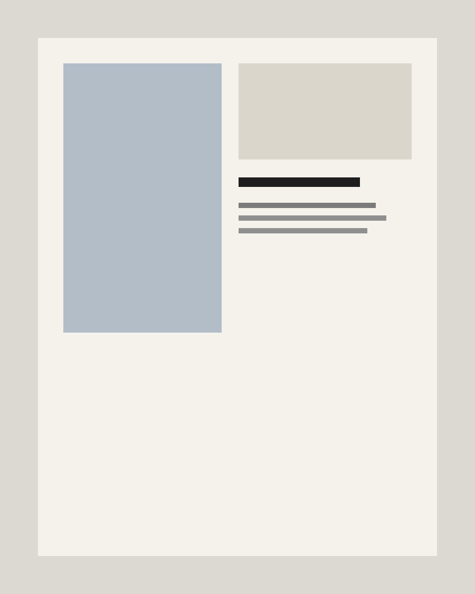
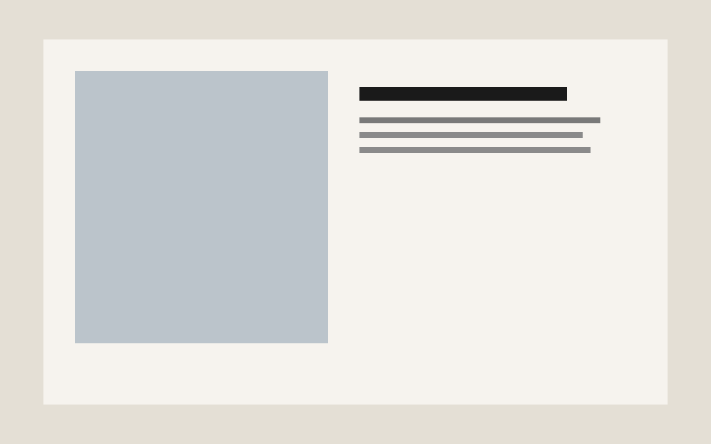

Case Study
Field Notes
An editorial platform translating interviews, site visits, and image research into a slow reading experience.
2024
Editorial / Digital Design
Case Study
An editorial platform translating interviews, site visits, and image research into a slow reading experience.
2024
Editorial / Digital Design

The design system prioritized pacing over decoration, with long margins, sharp image edges, and a restrained hierarchy that kept the writing in focus.
